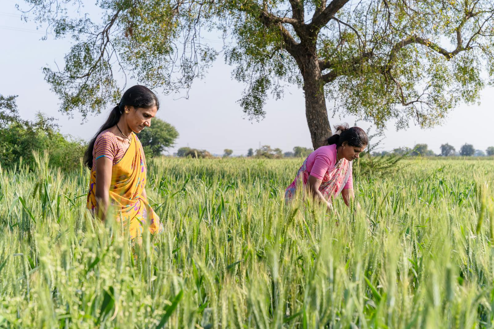

Core Work
- Mental health awareness in schools and villages
- Community counseling and referral support
- Stress, addiction, and crisis intervention sessions
Registered Social Development Organization
Building awareness, early support pathways, and access to counseling for rural communities.

Strengthen community mental wellbeing through awareness, preventive care, psychosocial support, and referral linkages to professional services.